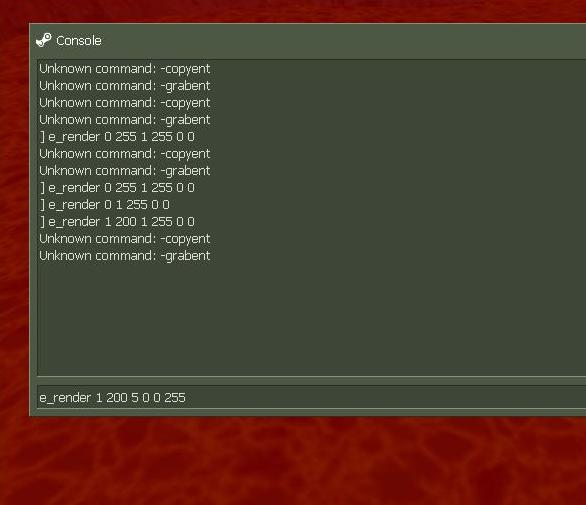
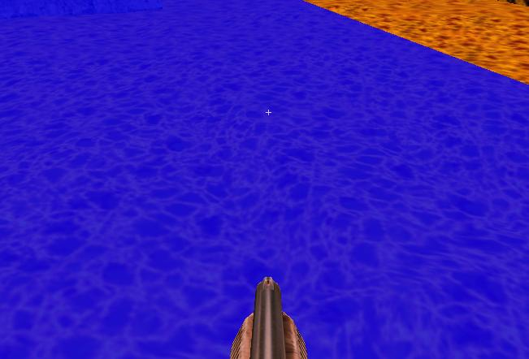

|
This section will explain to you how to use the e_render command in Ent Mod:
Command Use: Usage: Description:
First, you will need to enter the command in the console while looking at the ent you change to change:

In the example above, the ent needed to be blue have a slow
fade. How was these these numbers come up with?
You should always go by this chart when using e_render.
Next, we see the effect of entering this command:

The ent was turned blue like we wanted and is fading but of course the fading part is hard to see in a non-moving picture.
There are a lot of different settings for
this command. Changing an ent to blue and making it fade is
only two of the many. Examples:
This example was done with the DeathMatch Classic mod but this example holds true for all Half-Life mods |